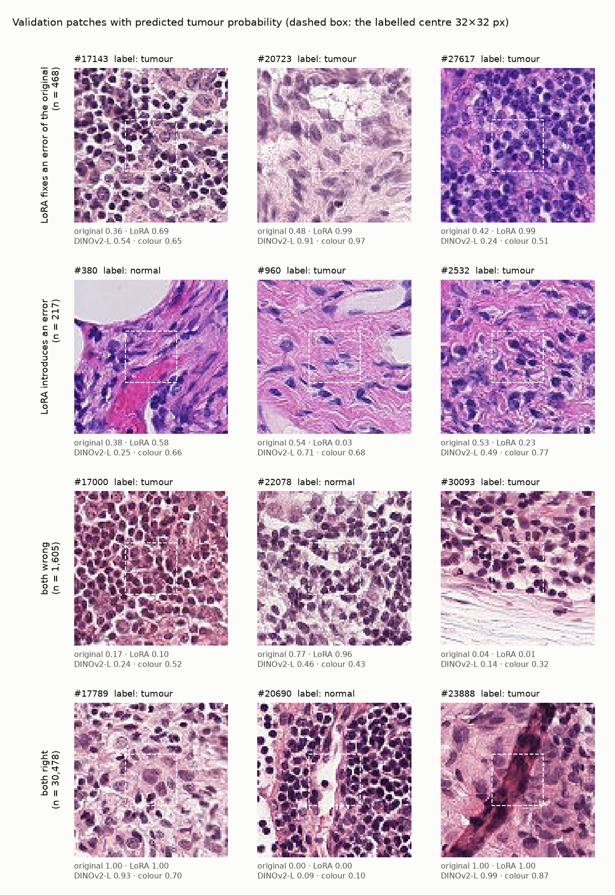
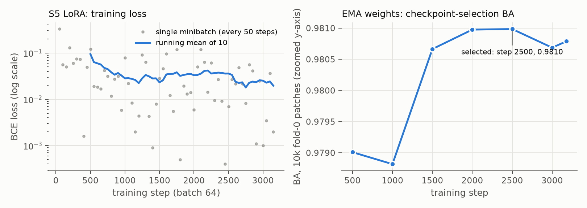

Hill-climbing Hibou-L on PatchCamelyon
A pre-registered attempt to improve Hibou-L, the best published pathology foundation model on the official PCam test split, one evidence-backed step at a time. Every step is chosen by slide-grouped cross-validation on train and gated on validation. The test split stays sealed until the ladder is frozen. Intervals are 95% slide-cluster bootstrap CIs.
Improvement ladder: every trained classifier vs. the original Hibou-L
Paired difference in balanced accuracy on the same patches (train out-of-fold and validation), with 95% slide-bootstrap CIs. Hibou-L stays frozen in S1–S3b (only the classifier is trained); LoRA (S5) also trains adapters inside Hibou-L. A step is adopted only if its best candidate passes the Holm-corrected sign-flip test and the validation no-harm gate. Per-candidate p-values here are descriptive.
No-training baselines: published eva leaderboard
Frozen backbone + linear probe, balanced accuracy on PCam validation and test (kaiko eva, pinned commit), with this study's reproduced Hibou-L validation score. Context only; not protocol-matched to later ladder steps.
Backbones in this study: frozen CLS + eva linear probe (train OOF)
Example outputs
Validation patches drawn at random (seed 0) from four groups defined by whether the original probe and the LoRA model are right, with each model's predicted tumour probability. The dashed box is the labelled centre.

LoRA training

Sealed test and out-of-distribution hospitals
All arms
Only aggregate metrics are shown. Per-patch outputs of models with non-redistributable licences (Virchow2, Phikon) are never published.